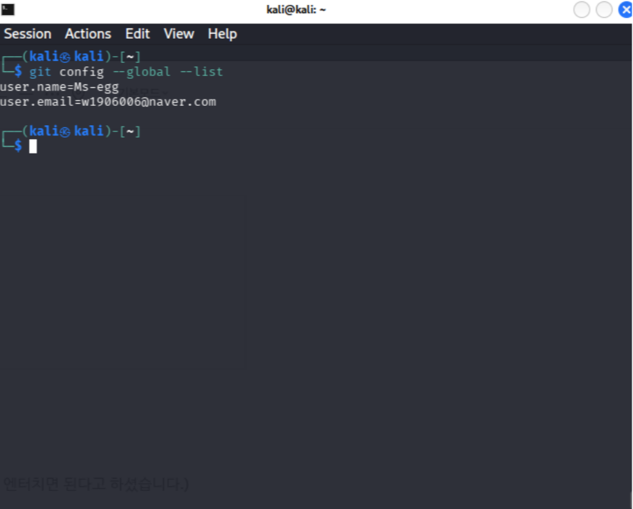
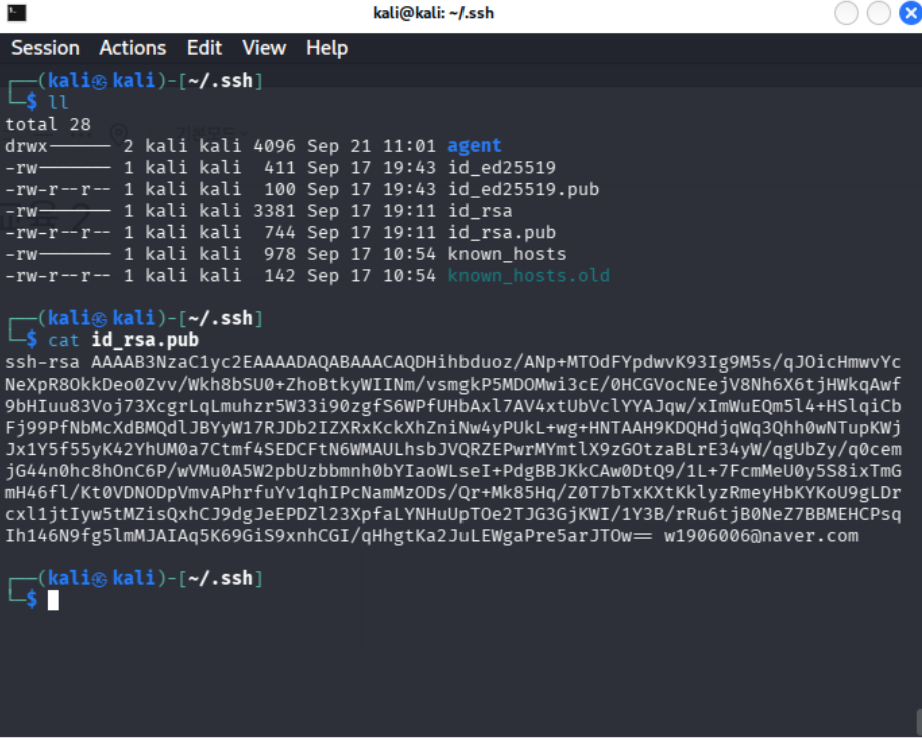
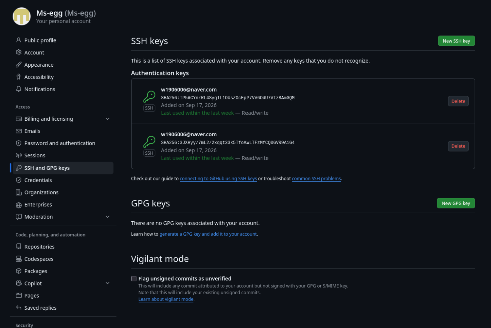

Kali Linux prompt에서 github에 push 하는 방법을 배웠다.
//System에서 사용할 전역 User Name과 이메일 등록
$ sudo apt install git
$ git config --global user.name 사용자명
$ git config --global user.email 이메일주소
확인방법
git config --global --list
mkdir 폴더명
ssh-keygen -t rsa -b 4096 -C your_email@example.com (비밀번호 입력하지말고 그냥 엔터치면 된다고 하셨습니다.)
cd
cd .ssh (홈디렉토리에 있는 숨겨진 ssh 파일 보기)
ll
cat id_rsa.pub
깃허브 로그인 -> settings -> ssh and gpg keys -> new sshkeys -> rsa.pub키 붙여넣기 -> new repository -> http주소 복사 ->

cd 폴더명(mkdir 했던 폴더)
git clone 주소(http)
vim 파일.h (gilgil에 있는거 복붙)
git add 파일.h
git commit -m"Add sum modules"
g++ -o main.o -c main.cpp
g++ -o sum.o -c sum.cpp
g++ -o sum-test main.o sum.o
옵션 -o: 생성될 실행 파일의 이름을 지정.
옵션 -c: 실행 파일을 만들지 않고, 소스 코드를 기계어로 번역한 목적 파일(.o)까지만 생성
gcc는 단일 파일 실행에 적합함
vim Makefile
git add Makefile
git commit -m "Add Makefile"
#Makefile all: sum-test
sum-test: main.o sum.o g++ -o sum-test main.o sum.o
main.o: sum.h main.cpp g++ -c -o main.o main.cpp
sum.o: sum.h sum.cpp g++ -c -o sum.o sum.cpp
clean: rm -f sum-test rm -f *.o
// 함수들은 예시로 넣음.
// 여러 파일 컴파일에는 make가 유리함
git status 현재 작업 중인 폴더의 '상태'를 점검
git remote -v Remote Repository 를 상세히 출력하는 명령어
make
git push origin main (main 자리에 branch 이름)
이때 실행이 되지 않는다면
git branch (branch 이름이 나옵니다.)
git push origin "branch 이름"
git hub에 push 완료!
리눅스가 어색하기도 하고 깃에 push 도 안해봤어서 솔직히 쉽지는 않았다. 그래도 듣고 정리하니까 그렇게 어렵지는 않은것같다. 앞으로 리눅스환경에 익숙해지기 위해 이런 push 방법도 익혀두면 좋을것 같다.